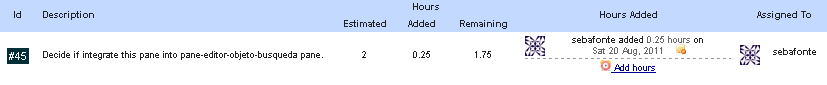
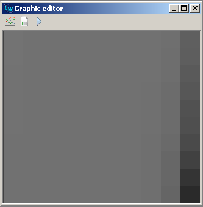
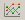

At the beggining of the weekend been working to make nicer panes for graphics. When i was looking for storys on my proyect tracking i saw accidentally:

I decided it will be a composite relationship, editor-pane will set graphic-pane subject to it´s selected object. By default the graphic will be just the representation, but it could be modified to display any possible graphic for the editor-pane selected object.
Design note: new graphic editors look
I changed graphic editors look for OpenGL visualization mode. They are very simple, they consist of the graphic and a three button toolbar. These two examples correspond to a map of the population fitness of three algorithm situations:
 

- a. Map of population of a steady state algorithm using tournament selection (less diversity).
- b. Map of population of the same steady state algorithm, but switched to random selection (more diversity).
- c. Map of a population with a perfectly matching solution for regression problem.
Toolbar description:
- Graphic class specifier button.
 Graphic properties editor button.
Graphic properties editor button.- Turn gaphic animation on / off.
Documentation note: thinking about examples
I been playing with some simple regression example, and thought it was a very well candidate for default documentation examples. It´s about searching for the function (+ (+ (* X X) (* 2 (* Y Y))) (/ Y 3)). In the next shot we can see different graphics for a run that found the desired solution in 56 seconds, and 2 executions later in 23 seconds:

Example graphics for size and fitness, some population fitness map and the result found. I think a very good way to show experiments conclusions is using graphics, but still looking how can i show more things in fewer examples.